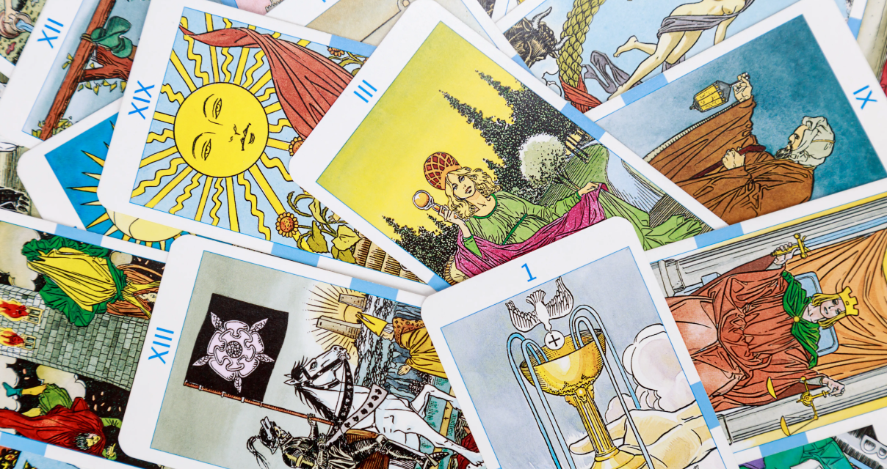
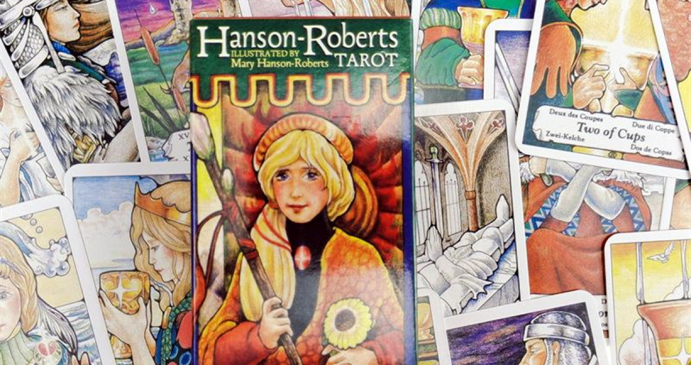

Важно выбрать колоду, которая будет легкой для понимания
и интерпретации символов, чтобы тебе было проще начать изучение
таро. вот несколько рекомендаций по выбору колоды.

колода райдера-уэйта
Колода Райдера-Уэйта (Rider-Waite) — одна из самых
известных и широко используемых колод Таро в мире. Она
была создана в начале XX века английским оккультистом
Артуром Эдуардом Уэйтом и художником Памелой Колман Смит Колода
состоит из 78 карт, включая 22 карты Мажорных арканов
и 56 карт Минорных арканов. Каждая карта содержит образы
и символы, которые передают определенные энергии, аспекты жизни
и архетипы. Карты Мажорных арканов изображают ключевые
жизненные ситуации и события, в то время как Минорные
арканы отражают более повседневные аспекты жизни и ситуации.
Она имеет яркие и понятные символы, что делает ее очень
доступной для новичков. Иллюстрации карт содержат много деталей
и символов, которые помогают расшифровать их значения.
Большинство карт имеют название и числовое значение, что также
помогает в интерпретации.
Эта колода была разработана с учетом эзотерических
и мистических систем, таких как каббала, астрология
и герметизм. Однако, она также оставляет место для интуитивного
понимания и свободной интерпретации. Эти карты стали
стандартными для многих тарологов и исследователей.
Их популярность объясняется не только ясностью
и понятностью символов, но и обилием литературы
колода таро моргана-гри
Колода Таро Моргана-Гри — это современная колода Таро,
созданная в 1979 году американскими художниками Биллом Ф. Гри
и Ллойдом Морганом. Она представляет собой свежую интерпретацию
классической колоды Райдера-Уэйта с новым художественным
стилем. Колода Таро Моргана-Гри содержит 78 карт, включая
22 карты Мажорных арканов и 56 карт Минорных арканов.
Иллюстрации карт являются цветными, живыми и эмоциональными.
Они отражают известные сцены и символы Таро, такие как
Влюбленные, Справедливость, Сила и т.д., но в более
современном и артовом стиле.
Одна из особенностей колоды Таро Моргана-Гри — это
ее выразительность и интенсивность. Карты обладают яркими
цветами и сильными эмоциональными выражениями, что помогает
легче воспринимать и интерпретировать символы. Каждая карта
имеет заглавие и номер, чтобы обеспечить ясность
и легкость в использовании.
Колода Таро Моргана-Гри отлично подходит для новичков, так как она
предлагает доступное и современное понимание Таро.
Ее художественный стиль способствует интуитивному
и эмоциональному восприятию карт, что помогает новичкам лучше
соединиться с энергией и символикой Таро. Колода
Моргана-Гри также часто используется для чтения
на общественности и практикующими тарологами. Она имеет
поддержку и материалы, включая книги и руководства,
которые помогают более глубоко понять значения карт и развить
интуитивные навыки.
колода таро хансена-робертса
Колода Таро Хансена-Робертса — это еще одна популярная
колода Таро, созданная американской художницей Мэри Хансен-Робертс
в 1985 году. Она представляет собой яркую, дружелюбную
и легкую в использовании колоду для начинающих
и опытных тарологов.
Колода Таро Хансена-Робертса состоит из 78 карт, включая
22 карты Мажорных арканов и 56 карт Минорных арканов.
Иллюстрации карт являются красочными, мягкими и полными эмоций.
Карты отличаются простотой и понятностью символов, что делает
их легко воспринимаемыми для новичков. Художественный стиль
колоды Таро Хансена-Робертса часто описывается как
«нежный» или «сказочный». Он уделяет
внимание эмоциональным аспектам и человеческим взаимодействиям.
Карты могут вызывать сильные чувства и помогать легче
соединиться с энергией и символикой Таро.
Колода Хансена-Робертса широко используется как инструмент для
саморазвития и самопознания. Она помогает развить интуицию,
внутреннюю мудрость и понимание своих эмоций. Колода также
обладает позитивной энергетикой, что делает ее отличным выбором
для работы с положительными аспектами жизни и вопросами
личного роста.
Для новичков колода Таро Хансена-Робертса может быть особенно
полезной, так как она предлагает простоту в понимании карт
и их значений. Она также имеет дополнительные материалы
и книги, которые помогут в изучении и интерпретации
символов.

колода таро «ошо» или «ошо-зен»
Колода Таро Ошо — это уникальная колода Таро, которая
основана на духовных учениях и философии индийского
мистика Ошо (ранее известного как Бхагван Шри Раджниш). Колода
создана Майклом Гебхартом и Морине Макфарланд-Бриджс
и выпущена в 1995 году.
Колода Таро Ошо отличается от традиционных колод Таро своим
художественным стилем и подходом к символике. Иллюстрации
карт сочетают разные стили и включают фотографии, рисунки
и абстрактные композиции. Они представляют собой современное
искусство, передающее энергию и идеи, связанные с учениями
Ошо. Колода Таро Ошо не имеет традиционных названий карт
и числовых значений, как в других колодах Таро. Вместо
этого, каждая карта сопровождается заглавием и цитатой
из учений Ошо. Такой подход направлен на развитие
интуиции, медитативного восприятия и собственного осознания,
а не строго формализованной интерпретации.
Колода Таро Ошо предлагает глубокое и интеллектуальное
погружение в философию и психологию. Она позволяет
рассматривать жизненные ситуации и вызовы через призму
осознанности, присутствия и духовного развития. Карты помогают
раскрыть новые уровни понимания и стимулируют личный рост. Эта
колода Таро может быть интересна тем, кто ищет глубину, прозрение
и духовное пробуждение. Она подходит для практикующих, которые
хотят использовать Таро как средство для развития самопознания,
принятия и просветления.
Важно отметить, что колода Таро Ошо не является традиционной
и может вызвать различные реакции у людей. Она отражает
уникальный и непривычный подход к Таро, основанный
на философии Ошо. важно помнить, что выбор колоды
таро — это вопрос личных предпочтений